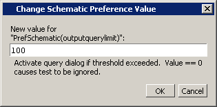

Some nets (such
as a clock) in a design can have many readers. This can cause the
display to draw numerous processes that you do not want to see when expanding
the selected signal, net, or register. Use this procedure to limit
the display of readers.
Procedure
- Select to
open the Preferences dialog box.
- Select the By Name tab.
- Click the ‘+’ sign next to
the Schematic preference item.
- Scroll to the outputquerylimit and
click (LMB) to select it.
- Click the Change
Value button to open the Change Schematic Preference
Value dialog box.
Figure 1. Change Schematic Preference
Value Dialog Box
- Set the limit for the number
of readers to be drawn and click the OK button.
- The schematic display tests
for the number of readers to be drawn and compares that number to
a limit that you set in Schematic Preferences. The default value of
this limit is 100 (if you set outputquerylimit to
0, the test is not done). If this limit is exceeded, a dialog box
asks whether you want all readers to be drawn. If you choose No,
then no readers are displayed.
Note: This
limit does not affect the display of drivers.